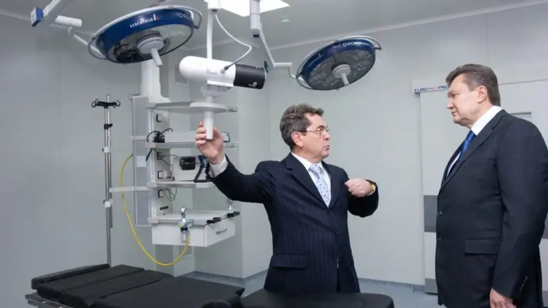

Наказ МОЗ №452 від 9 березня 2022 року зафіксував надзвичайну ситуацію: Центр дитячої кардіології та кардіохірургії мав тимчасово працювати у Львові. Пацієнти й медики — евакуйовані. Обладнання — за потреби переміщене.
Евакуація в перші тижні війни могла бути виправданою. Але будь-який кризовий переїзд державної установи вимагає подальшої відповіді на прості запитання: що вивезли, що залишилось, що повернулось, що втратило актуальність, що лежить мертвим вантажем, що повинно працювати для пацієнтів.
Судячи з подальших документів, ці питання довго залишались не просто господарськими. Вони перетворились на управлінську спадщину, з якою зіткнулась нова команда.
Ілля Ємець — не пересічний лікар. Це колишній міністр охорони здоров'я, багаторічний керівник однієї з ключових дитячих кардіохірургічних установ країни і людина, чиє ім'я регулярно з'являлось у журналістських розслідуваннях про майно родини.

Ілля Ємець показує тодішньому президенту Віктору Януковичу обладнання Центру дитячої кардіології.
Посаду міністра охорони здоров'я Ємець обіймав двічі. Вперше — з 21 грудня 2010 року по 17 травня 2011 року, у першому уряді Миколи Азарова, тобто за президентства Віктора Януковича. Вдруге — короткий термін з 4 по 30 березня 2020 року, в уряді Дениса Шмигаля. Це означає, що Ємець був повноцінним членом уряду Януковича в період, коли почала формуватись та сама вертикаль влади, яку згодом масово піддали процедурі очищення влади. Питання, чому посадовець з міністерським досвідом саме за Януковича згодом десятиліттями беззаперечно очолював державну установу і не потрапив під дію закону про люстрацію 2014 року, залишається відкритим і потребує окремої перевірки — зокрема, чи підпадала його посада й термін повноважень під критерії закону, чи проводилась стосовно нього перевірка, і яким було її рішення.
Є ще один показовий момент, який легко не помітити за датами. Обидва міністерські терміни Ємця виявились короткими: перший тривав менш ніж п'ять місяців, другий — лише 26 днів. Людина, яка публічно асоціювалася з ідеєю реформи медицини — насамперед завдяки успіху власного спеціалізованого центру дитячої кардіології — двічі опинялася в ситуації, коли її управлінська модель не витримувала перевірки вже не на рівні одного закладу, а на рівні цілої галузі: обидва рази посаду міністра він залишав не через планове завершення каденції уряду, а через швидку політичну чи інституційну розв'язку. Це ставить питання, що виходить за межі конкретного епізоду чи конкретного уряду: чи є управлінський підхід, який давав результат у межах одного закладу з його ресурсами, фінансуванням і командою, тим самим підходом, що здатний працювати на рівні системи охорони здоров'я цілої країни — і чи не є сама короткочасність обох мандатів непрямим індикатором того, що ця модель не масштабувалась.
Другий, хоч і короткий, термін Ємця на посаді міністра у 2020 році супроводжувався низкою публічних скандалів. На засіданні комітету Верховної Ради з питань охорони здоров'я він повідомив, що від коронавірусу «помруть всі пенсіонери». В одній з телепередач він закликав не виділяти кошти на лікування чоловіків старше 65 років, назвавши їх «трупами» — вислів, що викликав обурення в соціальних мережах.
Ємця також звинувачували у затягуванні купівлі ліків і засобів захисту для лікарів під час епідемії. Уряд виділив на це 67 млн грн ще 19 лютого 2020 року, коли в Україні ще не було хворих на коронавірус, але договір про купівлю з міжнародною організацією Crown Agents Україна було підписано лише 26 березня — три тижні договір не підписував саме Ємець. Депутатка фракції «Голос» Олександра Устінова звинувачувала його в тому, що він хотів поставити свого «смотрящого» і нажитися. Поки централізованих засобів для лікарів не було, закупівлі на місцях вели за допомогою бізнесменів і з місцевих бюджетів — на потреби, які мало забезпечувати МОЗ. Очільник державного підприємства «Медичні закупівлі України» Арсен Жумаділов звинуватив Ємця у блокуванні закупівель життєво необхідних ліків на суму близько 10 млрд грн і повідомив, що людина, яку Ємець хотів поставити «смотрящим», мала судимість — цю інформацію підтвердила колишня міністерка охорони здоров'я Уляна Супрун.
Ще у 2020 році журналісти «Слідство.Інфо» писали про нерухомість і бізнес родини Ємця на десятки мільйонів гривень. У центрі уваги були активи, походження яких, на думку журналістів, викликало запитання: будинок під Києвом, майно членів родини, об'єкти в Буковелі, родинні подарунки та позики.
У 2026 році тема отримала продовження. Видання StopCor писало про декларації Ємця: нерухомість у Греції, мільйонні доходи, подарунки від родини та користування преміальним автомобілем через благодійний фонд. Ці твердження потребують перевірки компетентними органами. Але вони вже стали частиною публічної репутації колишнього керівника.
І саме тут виникає головний конфлікт історії. Поки суспільство ставить запитання про особистий майновий профіль колишнього керівника, нова команда Центру змушена займатись іншим майном — державним, медичним, придбаним не для декларацій і не для складів, а для лікування дітей і дорослих.
Внутрішня довідка про результати діяльності Георгія Маньковського показує управлінську картину, яка сильно відрізняється від парадних звітів. Нова команда заявляє про кілька ключових кроків: проведена інвентаризація матеріально-технічної бази; забезпечене повернення обладнання, евакуйованого до Львова у 2022 році; виявлене обладнання, яке було справним, але довго не використовувалось; організована передача обладнання в інші установи, де воно реально потрібне; запущений сучасний кол-центр; введене в експлуатацію реабілітаційне обладнання; посилена робота з НСЗУ; збережений підвищений рівень зарплат медичних сестер та інших працівників; проведена інвентаризація запасів дезінфекційних засобів, що дозволило оптимізувати закупівлі.
Це не виглядає як косметичний ремонт репутації. Це більше схоже на спробу витягнути установу з режиму накопиченого управлінського хаосу.
Найсильніший блок документів — передача обладнання. Один з прикладів — ангіографічна рентгенівська система Siemens Artis zee ceiling 2019 року випуску. Первісна вартість — 32,3 млн грн, залишкова — понад 21,5 млн грн. Документи показують: обладнання готується до передачі в Краматорськ, на баланс обласного територіального медичного об'єднання Донецької області.
Виникає очевидне запитання: чому така техніка мала чекати окремого управлінського рішення, щоб почати працювати там, де вона потрібна?
Інший приклад — Одеса. Наказ МОЗ фіксує передачу 33 одиниць обладнання Одеському національному медичному університету на суму понад 8,69 млн грн: стерилізатори, аналізатори, монітори пацієнта, апарати для плазмаферезу, інфузійні насоси, електроенцефалографічна система, хірургічна освітлювальна система, апарат для терапії пацієнтів з гострим ушкодженням нирок.
Третій приклад — Охматдит. Наказ МОЗ №743 фіксує передачу 5 одиниць обладнання на суму понад 9,25 млн грн: автоматичний аналізатор для визначення груп крові та резус-фактора, обладнання для служби крові, контактний шоковий заморожувач, центрифуга для станції переливання крові.
І це вже не просто «господарська діяльність». Це політичний тест: державне обладнання повинно лежати на складі чи рятувати пацієнтів?
Фотографії з приміщень Центру показують те, що зазвичай не потрапляє в офіційні пресрелізи. Медична установа, яка повинна бути простором точності, стерильності й контролю, на знімках виглядає як склад гуманітарної допомоги або тимчасова логістична база: коробки, ліжка, манежі, розхідники, обладнання, люди серед упаковок.
Ці кадри не доводять злочин. Але вони доводять масштаб управлінського завдання. Після таких кадрів фраза «провести інвентаризацію» перестає бути бюрократичною. Вона означає: зрозуміти, що знаходиться в державній установі, хто за це відповідає, що можна використати, що треба повернути, що треба передати, а що взагалі втратило зв'язок з медичним процесом.
Георгій Маньковський прийшов у ситуацію, де головним ресурсом був не лише бюджет. Головним ресурсом була довіра. Довіра лікарів — бо без мотивації персоналу Центр не може працювати. Довіра пацієнтів — бо люди повинні додзвонитись, записатись, отримати консультацію та послугу. Довіра держави — бо обладнання на десятки мільйонів гривень повинно мати зрозумілу долю. Довіра суспільства — бо після журналістських розслідувань про колишніх керівників будь-яка закритість сприйматиметься як продовження старої системи.
За словами людей, знайомих із ситуацією в Центрі, команда Ємця не пішла з цієї історії остаточно. Старі зв'язки, старі впливи, старі конфлікти навколо майна та управлінських рішень, за їхніми словами, продовжують заважати новій команді проводити зміни.
За тими самими свідченнями, Ілля Ємець фактично розпочав публічну кампанію проти нової команди Центру. За словами джерел, ця кампанія велась під гаслом «жодних змін» — із публічними звинуваченнями нового керівництва в «договірняках» і «сірих схемах», без пред'явлення документальних доказів. За цими ж свідченнями, форму такої боротьби важко назвати інакше, як новий тиск на дітей і батьків, які й без того перебувають у вразливому стані через хворобу й лікування, — конфлікт навколо управління перетворився на додаткове джерело тривоги для родин пацієнтів.
Джерела також стверджують, що кампанія включала медійні атаки через дружні або підконтрольні ЗМІ, голосні пресконференції з публічними звинуваченнями нової команди та спроби саботажу всередині колективу Центру — від поширення дезінформації серед персоналу до зриву окремих управлінських рішень.
Ця частина потребує додаткової документальної перевірки: записів і стенограм пресконференцій, публікацій у ЗМІ із зазначенням дат, внутрішніх скарг чи службових записок про випадки саботажу, свідчень співробітників із конкретними епізодами, службових записок, листів, скарг, внутрішніх розпоряджень, судових документів, звернень до органів влади або листування з МОЗ. Без цих документів викладене вище залишається переказом джерел, а не встановленим фактом.
Які саме одиниці обладнання були евакуйовані з Центру до Львова у 2022 році, коли і в якому стані вони були повернуті? Чому частина справного обладнання довго не використовувалась? Хто приймав рішення про зберігання, переміщення та фактичне використання обладнання? Чи проводилась повноцінна інвентаризація майна Центру до приходу нової команди? Чи були внутрішні перевірки щодо розхідників, обладнання, гуманітарної допомоги та матеріальних запасів? Чому публічні питання до майна родини Іллі Ємця роками не отримали виключної відповіді від компетентних органів? Чи перевіряли НАЗК, НАБУ або інші органи відповідність доходів, подарунків, позик і майнового профілю колишнього міністра? Чи має колишня команда Ємця фактичний вплив на процеси в Центрі після зміни керівництва? Чому Ємець, обіймаючи посаду міністра охорони здоров'я в уряді Азарова за президентства Януковича (21.12.2010–17.05.2011), не підпадав під перевірку за законом «Про очищення влади» 2014 року, і чи проводилась така перевірка взагалі?
В українській медицині вже кілька років діє принцип, який мав змінити саму філософію державних лікарень: гроші йдуть за пацієнтом. Держава через НСЗУ оплачує медичній установі не абстрактне існування ліжко-місць, а конкретні медичні послуги, надані конкретним людям — у межах Програми медичних гарантій.
За словами людей, знайомих із ситуацією в Центрі, стара система давала збій саме тут: пацієнт формально мав право на допомогу, але навколо медичної послуги залишалась сіра зона — хто і скільки платить, як формується дохід установи, чому персонал при величезному навантаженні все одно не бачив гідної зарплати.
Згідно з внутрішньою довідкою про результати діяльності Маньковського, вперше в історії Центру запущений механізм матеріального стимулювання співробітників: лікарі отримують додаткову винагороду в розмірі 20% від вартості наданих платних медичних послуг. Робота з НСЗУ у 2026 році дала різке зростання фінансування порівняно з 2025 роком.
Ця історія не лише про Ємця. І навіть не лише про Маньковського. Вона про те, як в українській державній медицині може існувати паралельна реальність. В одній реальності — діти, пацієнти, лікарі, обладнання, яке повинно працювати щодня. В іншій — декларації, дорога нерухомість, родинні подарунки, позики, фонди, машини й політичні зв'язки.
Маньковський сьогодні пропонує суспільству просту формулу: обладнання повинно лікувати, персонал повинен бути мотивований, пацієнти повинні отримувати сервіс, державне майно повинно бути обліковане. Ємець залишає по собі інше запитання: як людина з державної медицини опинилась у центрі стількох майнових питань — і чому відповіді на них досі не стали предметом повноцінної публічної перевірки?
Документи вже показують головне: після старої команди Центру знадобилась не косметика. Йому знадобилась інвентаризація, повернення управління й демонтаж старої логіки, за якою державні ресурси могли роками залишатись без ясної публічної долі.
Матеріал підготовлено на основі наказів та листів МОЗ щодо евакуації, повернення й передачі медичного обладнання, внутрішньої довідки про результати діяльності Центру за керівництва Георгія Маньковського, публікацій «Слідство.Інфо», «Української правди» та StopCor щодо майна родини Іллі Ємця, а також відкритого реєстру декларацій НАЗК. Твердження щодо походження майна та доходів Іллі Ємця є предметом журналістських публікацій і відкритих декларацій, а не встановленим судовим фактом, і потребують перевірки компетентними органами. Зв'язок між евакуацією 2022 року, подальшим станом матеріально-технічної бази Центру та публічними питаннями до майна Іллі Ємця має інституційний і хронологічний характер; матеріал не стверджує наявності прямого правопорушення з боку названих осіб.